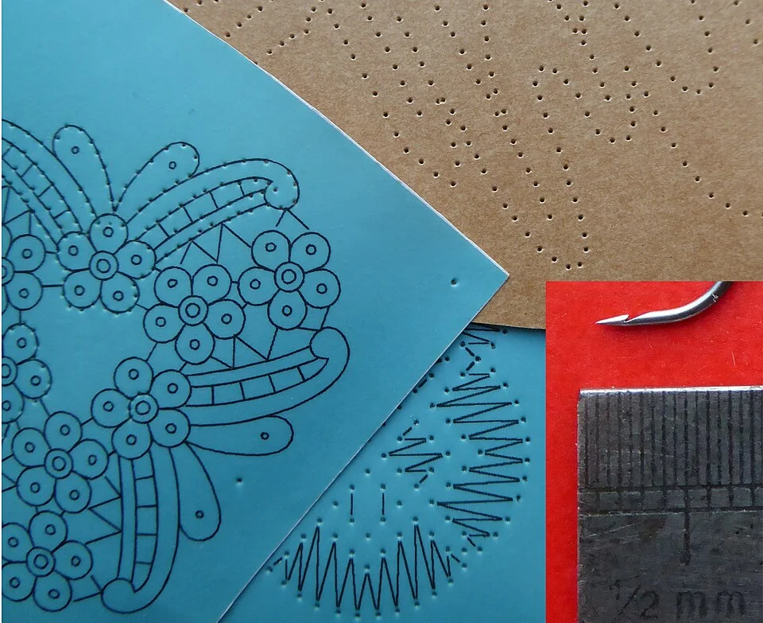

Bobbin lace prickings and working diagrams
Cross the middle bobbins or twist both pairs. Follow each colored thread through the resulting working diagram.
Inspect source image

Cross the middle bobbins or twist both pairs. Follow each colored thread through the resulting working diagram.
